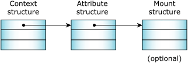
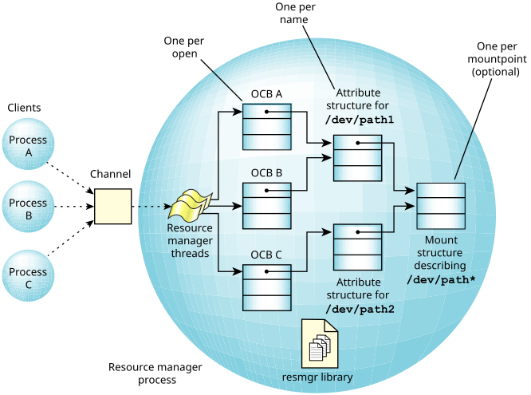

Since a large number of the messages received by a resource manager deal with a common set of attributes, the OS provides another level of default handling.
This second level, called the iofunc_*() shared library, allows a resource manager to handle functions like stat(), chmod(), chown(), and lseek() automatically, without the programmer having to write additional code. As an added benefit, these iofunc_*() default handlers implement the POSIX semantics for the messages, again offloading work from the programmer.

The first data structure, the context, has already been
discussed (see the section on
Message types
).
It holds data used on a per-open basis, such
as the current position into a file (the lseek() offset).
Since a resource manager may be responsible for more than one resource (e.g., devc-ser* may be responsible for /dev/ser1, /dev/ser2, /dev/ser3, etc.), the attributes structure holds data on a per-resource basis. The attributes structure contains such items as the user and group ID of the owner of the resource, the last modification time, etc.
For filesystem (block I/O device) managers, one more structure is used. This is the mount structure, which contains data items that are global to the entire mount device.

The iofunc_*() default functions operate on the assumption that the programmer has used the default definitions for the context block and the attributes structures. This is a safe assumption for two reasons:
The library contains iofunc_*() default handlers for these client functions: